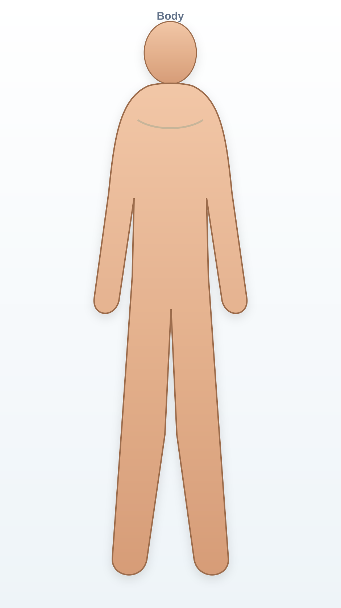

Statische, gecentreerde gezondheidsatlas
Geen bewegende atlas en geen zichtbare blauwe rondjes. Selecteer via de onzichtbare kaartlaag; het geselecteerde onderdeel licht op en stuurt alle andere onderdelen van de app aan.
Lichaam
Buitenkant, huid en algemene regio’s.

De atlas blijft volledig in beeld. Klik op een structuur of gebruik de knoppen hieronder.
Professionele indicatieve analyse
Live context
Modules voor leren, preventie en eerste hulp
Persoonlijke context
Alles blijft lokaal in je browser. Het profiel beïnvloedt atlasweergave, rode vlaggen, context en analyse.
Lokale gegevens en controle
Geen server, geen advertenties, geen automatische upload. Atlasbeelden zijn educatief; echte foto’s/AR/uploads zijn later privacygevoelig en vragen aparte toestemming.
Toekomstmodule: camera, AR en foto-analyse
Deze functionaliteit staat bewust los van de stabiele atlas. Later alleen met expliciete toestemming, lokale verwerking, SafeBlur, metadata-strip en kindveiligheidsregels.
- Atlasbeelden worden niet geblurd.
- Echte gebruikerbeelden worden privacygevoelig behandeld.
- Onder 16: geen intieme echte beelden analyseren.
- Volwassen intieme beelden alleen later met aparte consent-flow.